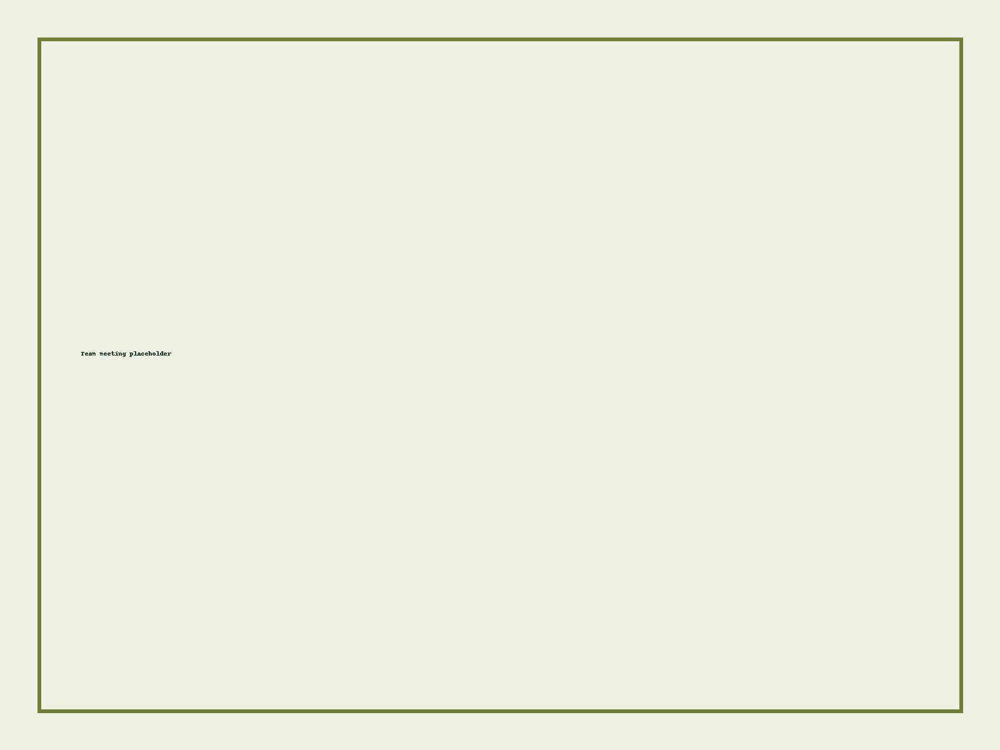
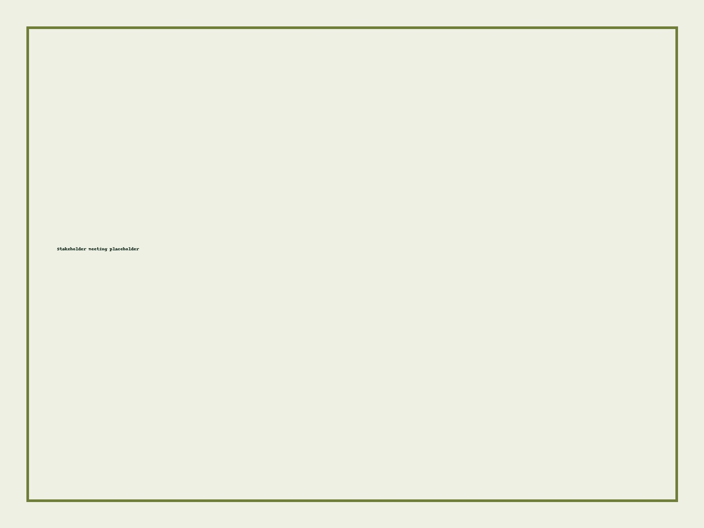

Patrick J. Gavin • Consultant
Turning vision into sustainable systems—
Turning vision into sustainable systems—
with equity and accountability at the center.
I help founders, CMOs, and authorizers design and implement schools and systems that work: authentic community engagement, durable governance, data you can use, and facilities and growth plans grounded in reality.
Startup & replication
Authorizing & accountability
Strategy & governance
Facilities readiness
Data systems & progress monitoring
Services
Planning
Charter Design & Applications
Vision/values, needs assessments, theory of change, logic models, and complete applications with community engagement and budget/operations alignment.
Execution
Launch & Leadership Support
Leader hiring support, facility identification, enrollment campaigns, board routines, and early-year progress monitoring tuned to your goals.
Systems
Authorizing & Accountability
Equity-centered enrollment practices, weighted lotteries, mission-specific measures, and performance frameworks that drive improvement.

